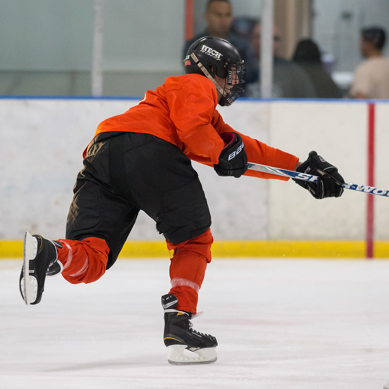
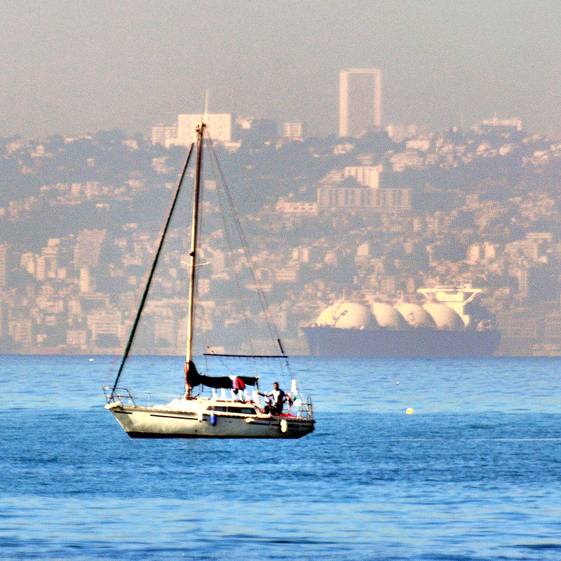
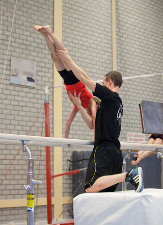
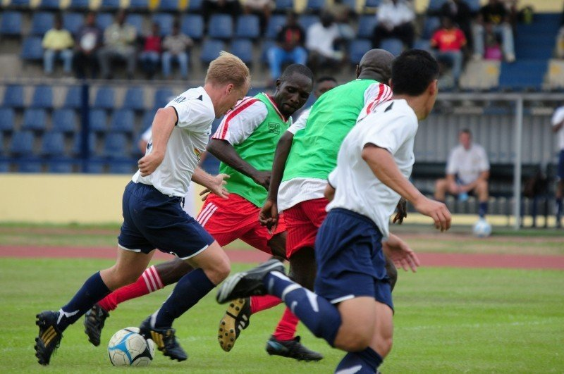
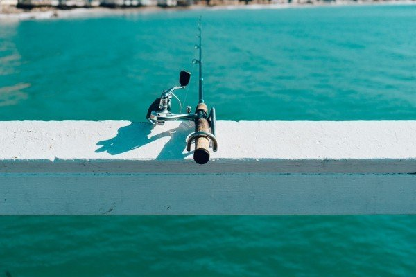

Hockeyclub H.M.H.C. Saxenburg
HMHC Saxenburg is a hockey club in Haarlem. The club was founded on October 1, 1912 and plays in the Boerhaavewijk.

HJC Haarlemse Jachtclub
The Haarlemsche Jachtclub (HJC) was founded in 1917 and is still a very active water sports club and passers-by harbor with around 500 members.

Kung Fu Haarlem
Kung Fu Haarlem is one of the 57 companies in the gyms category in the Haarlem city guide. Kung Fu Haarlem is located at the Houtmarkt in Haarlem. This company is open 5 days a week.

Pre-Sport B.V.
PréSport is a cozy and professional sports, dance and swimming school, located in the center of SanTwee in Haarlem-Schalkwijk, close to Heemstede.
Here we have a lovely heated swimming pool of at least 32 degrees, a large gym and a cozy coffee corner.
Sport club HLC
offers Gymnastics for children, Dancing, Acrogymnastics & Circus for children
for adults: keep fit lessons, yoga and recreational badminton for women.

Sportvereniging “Bato-Haarlem”
Bato was founded on March 5, 1896 as a gymnastics and fencing club. Since then, Bato has had multiple disciplines within the club, such as handball, trampoline jumping, men's gymnastics and even tug of war.

Olympia Haarlem
We are a sports club with multiple sports like football, softball, darts..

HWA-RANG DRAGON
Taekwondo is one of the most systematic and scientific Korean traditional martial arts, that teaches more than physical fighting skills. It is a discipline that shows ways of enhancing our spirit and life through training our body and mind.

Mudoin Taekwondo Haarlem
The history of the Haarlem location goes back to 1990, when Grandmaster Kim opened his very first school. In 2000 his three students, all Haarlemmers, Jean Michel Nelissen, Vincent Goldman and Marcel Takken, followed his footsteps and opened this location under the name 'Mudoin'. Since 2014, this location has been led by Jean Michel Nelissen.

Hengelsportvereniging Haarlem
The association is very active in the area of fish stock management because we believe that the water that ultimately serves as the living environment of the fish should be of the best possible quality.
If that quality is good, then it is possible for the angler to optimally enjoy his or her sport and the environment. To achieve this, the HVH works closely with the municipality of Haarlem to achieve the best results.

HWA-RANG DRAGON
Taekwondo is originally a Korean martial art, where both hand and foot techniques are used. The literal translation of the word Taekwondo is: "The way of the foot and the fist". The word Taekwondo is made up of 3 parts:
Tae (foot): The foot represents all leg techniques such as kicking and jumping.
Kwon (fist): The hand stands for all hand and arm techniques such as punching, blocking, grasping, clamping and throwing.
Do (the way: The road is the path that you follow while practicing Taekwondo and mainly represents the mental part.